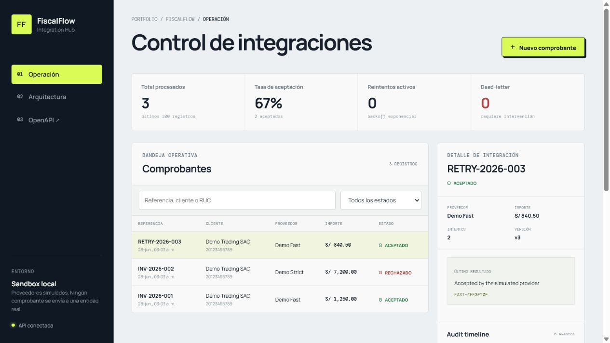

01 / PROBLEMA
Las APIs externas fallan y los reintentos duplican operaciones.
El reto no era “hacer un CRUD”, sino preservar consistencia cuando el proveedor tarda, rechaza o falla temporalmente, sin perder trazabilidad para soporte.
Full Stack Developer · Lima, Perú
Más de 5 años trabajando entre producto, frontend, APIs, datos e integraciones. Convierto flujos operativos complejos en software mantenible, observable y listo para entregar.
Caso de ingeniería 001
Un sandbox Full Stack para convertir una integración externa poco confiable en un flujo idempotente, auditable y operable. Está inspirado en problemas reales de integración, pero usa proveedores simulados y no contiene código ni datos de empleadores.
01 / PROBLEMA
El reto no era “hacer un CRUD”, sino preservar consistencia cuando el proveedor tarda, rechaza o falla temporalmente, sin perder trazabilidad para soporte.
02 / DECISIÓN
Cada operación registra su intención y auditoría en la misma transacción. Un worker procesa el outbox con backoff, dead-letter y adaptadores intercambiables.
03 / EVIDENCIA
El repositorio incluye pruebas de dominio e integración con PostgreSQL real, build del frontend, health checks, OpenAPI, ADRs, seguridad y validación E2E del stack completo.

Trabajo seleccionado
Tres sistemas para conversar sobre arquitectura, fallos, seguridad y entrega; no una lista infinita de demos.
02
EVENT-DRIVEN / JAVA ● CI PASS
Autorización de transacciones y evaluación antifraude explicable mediante microservicios, Kafka y outbox transaccional.
03
MULTI-TENANT / SECURITY ● CI PASS
API SaaS multi-tenant con aislamiento por JWT, arquitectura hexagonal, RBAC y concurrencia optimista.
04
OPTIMIZATION / PRODUCT UI ● LIVE
Motor de cronogramas con restricciones, edición interactiva y exportación para operaciones de supervisión.
Trayectoria
He participado en facturación, finanzas, educación, ecommerce y herramientas internas; tanto construyendo producto como investigando incidencias en sistemas existentes.
Productos por contrato: interfaz, APIs, persistencia, integraciones y despliegue.
Mejoras e incidencias sobre sistemas PHP, JavaScript, PostgreSQL y SQL Server.
Aplicación móvil Kotlin, APIs REST y soporte de servicios web y Linux.
SPAs y servicios con Laravel, Vue, Node.js, MySQL y Docker.
Integración de facturación electrónica: requisitos de API, diagnóstico y acompañamiento técnico a clientes.
Sobre mí
Soy desarrollador Full Stack y también he acompañado integraciones desde el lado del cliente. Por eso me importa tanto que una interfaz sea clara como que una API pueda diagnosticarse cuando falla.
BASELima, Perú
ENFOQUEFull Stack · APIs · Integraciones
FORMA DE TRABAJOComunicación directa y entregas reproducibles
Cómo trabajo
Primero hago explícitos el dominio, los estados y los fallos. La distribución viene después, si resuelve un problema real.
Las integraciones requieren idempotencia, reintentos controlados, observabilidad y una salida operativa.
README, decisiones, pruebas y contenedores reducen la distancia entre “funciona aquí” y un sistema mantenible.
DISPONIBLE PARA NUEVAS OPORTUNIDADES
LIMA · REMOTO / HÍBRIDO